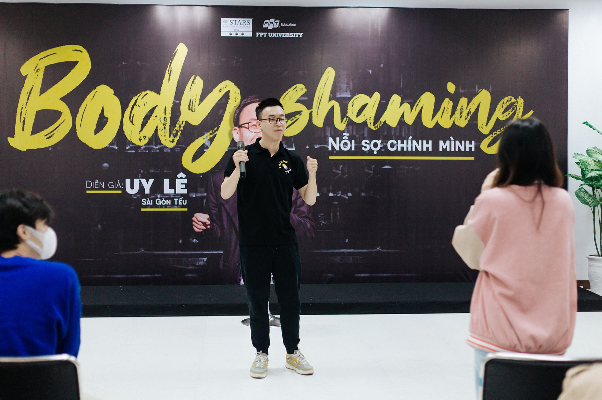

Guest: Uy Lê Sài Gòn Tếu
TALKSHOW “BODY SHAMING”
Hands up for Sai Gon Teu and Uy Le. It was totally out of my expectation with something called "Stand-up comedy" which is a foreign comedy style. But this time, Uy Le came here not for comedy only, he made us blow away with his past of obsessively being "Body Shaming".